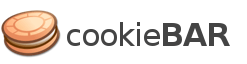

a free & easy solution to the EU cookie law.
Why cookieBAR?
There is a lot of mystery and fuss surrounding the EU cookie legislation, but it's essentially really simple. Cookies are files used to track site activity and most websites use them. Site owners need to make the use of cookies very obvious to visitors.
cookieBAR makes it simple and clear to visitors that cookies are in use and tells them how to adjust their browser settings if they are concerned.
New version! cookieBAR v. 1.10 is out! While most of the functionality remains the same, there is a new cookiebarConsent event listener that allows advanced users to detect the user's choices and act accordingly.<a href="#" onclick="document.cookie='cookiebar=;expires=Thu, 01 Jan 1970 00:00:01 GMT;path=/'; setupCookieBar(); return false;">Click here to revoke the Cookie consent</a>
News
- 17.10.2022 - 1.10.0: Added the cookiebarConsent event listener.
- 02.08.2022 - 1.9.4: Added Estonian translation.
- 12.08.2021 - 1.9.0: Added "customize cookies" options.
- 12.08.2021 - 1.8.4: Added Occitan translation.
- 01.02.2021 - 1.8.3: Added Turkish translation.
- 17.12.2020 - 1.8.2: Fixed broken safari link.
- 25.11.2020 - 1.8.1: Updated Finnish translation.
- 19.11.2020 - 1.8.0: Made the DENY confirmation alert optional.
- 28.08.2020 - 1.7.13: Updated Catalan translation.
- 25.03.2020 - 1.7.12: Added Croatian translation.
- 03.03.2020 - 1.7.11: Updated PL, Added Norway to cookieLawStates.
- 08.02.2020 - 1.7.10: Updated RU, DE translation.
- 09.07.2019 - 1.7.9: Added BR translation, updated Danish, Czech, Hungarian translations.
- 14.03.2019 - 1.7.6: Added Bulgarian translation.
- 04.03.2019 - 1.7.6: Updated Romanian translation.
- 11.12.2018 - 1.7.5: Added Norwegian and Finnish translations.
- 02.09.2018 - 1.7.1: Fixed typo in Romanian translation.
- 06.08.2018 - 1.7.0: New option: show the cookie policy link in the main bar.
- 30.07.2018 - 1.6.4: New ICO link for english language, missing closing 'p' tags.
- 21.07.2018 - 1.6.3: Added Greek translation.
- 12.07.2018 - 1.6.2: Auto opt-in for non EEA users
- 12.07.2018 - 1.6.1: Switched to freegeoip.app, new theme "momh"
- 20.06.2018 - 1.6.0: All of the images are now css sprites. CSS moved in a themes folder. Code cleanup
- 16.06.2018 - 1.5.36: Fixed bug in cookies detection
- 16.06.2018 - 1.5.35: Switched from freegeoip to ipdata.co
- 16.06.2018 - 1.5.34: Small corrections in ro.html
- 10.04.2018 - 1.5.33: Updated version numbers, updated README.md, updated package.json
- 10.04.2018 - 1.5.32: Small corrections in de.html
- 30.03.2018 - 1.5.31: Switched to freegeoip.net.
- 19.02.2018 - 1.5.30: Updated Dutch translation.
- 13.01.2018 - 1.5.29: Added Russian translation.
- 11.09.2017 - 1.5.28: Added package.json.
- 14.08.2017 - 1.5.27: Updated Polish translation.
- 27.05.2017 - 1.5.26: Bugfix in CSS - default theme.
- 05.05.2017 - 1.5.25: Fixed Slovenian translation.
- 02.05.2017 - 1.5.24: Added Polish translation.
- 27.04.2017 - 1.5.23: Added Slovenian translation.
- 06.04.2017 - 1.5.22: Modified GeoIP lookups, added "skip GeoIp" option, added "hide details" option, new "Flying" theme.
- 28.03.2017 - 1.5.21: Added Swedish translation.
- 17.03.2017 - 1.5.20: Fix loading of language files, fix invalid CSS in altblack css
- 25.11.2016 - 1.5.19: Update nl.html
- 25.11.2016 - 1.5.19: Update nl.html
- 12.10.2016 - 1.5.18: Fixed typo in en.html, updated fr.html, added Slovak translation, added Czech translation.
- 02.10.2016 - 1.5.17: Optionally refresh page on CookieAllowed.
- 30.06.2016 - 1.5.16: Add Croatia to EU list.
- 19.05.2016 - 1.5.15: Added Danish translation.
- 14.04.2016 - 1.5.14: Switched from freegeoip.net to freegeoip.io.
- 05.04.2016 - 1.5.13: Added Romanian translation.
- 13.03.2016 - 1.5.12: Added "scroll window to confirm" option.
- 01.02.2016 - 1.5.11: Minor enhancements.
- 28.12.2015 - 1.5.10: Added Portuguese translation.
- 24.12.2015 - 1.5.9: Added Catalan and Spanish translation.
- 20.12.2015 - 1.5.8: Added Dutch translation.
- 10.12.2015 - 1.5.7: Switched back to freegeoip.
- 03.11.2015 - 1.5.6: Improved French translation.
- 19.09.2015 - 1.5.5: Removed the 'http' prefix for telize api.
- 10.09.2015 - 1.5.4: Switched from freegeoip to telize.
- 06.09.2015 - 1.5.3: Added minified CSS and JS, set GB and not UK for the cookieLaw states, fixed a bug when hiding the bar (margins were not correctly reset).
- 04.08.2015 - 1.5.2: Added Hungarian and German, better English translation. Some other minor fixes.
- 29.06.2015 - 1.5.0: You can specify wether third party or tracking cookies are in use, the bar is shown only in the countries affected by this law.
- 30.05.2015 - 1.4.0: Show cookieBAR even when no cookies nor localStorage is detected (always show), added a "remember choice" duration config.
- 27.05.2015 - 1.3.0: Both bar and modal box are now themeable. If you want to use your own theme, make a pull request on GitHub.
- 25.05.2015 - 1.2.1: I have moved the cookieBAR plugin to jsDelivr, a shiny Content Delivery Network (CDN). It should be faster and more reliable. If you are still using the old //cookie-bar.eu path, you really should switch to the new path.
- 20.05.2015 - 1.2.0: Fixed a nasty CSS bug that made the bar's text strange or even invisible at all.
Customize cookies (1.9)
Starting from version 1.9, the user may want to choose whether to accept technical or third-party cookies. This choice creates a new state for the `cookiebar` cookie, which is "CookieCustomized". In this case, in your backend, it will be necessary to make two new checks to verify the value of the cookies `cookiebar-tracking` and `cookiebar-third-barty` (whose value can be true or false), and to instantiate the services, in a similar way to the following examples.
Preventive blocking of external services
Please note that in some countries, the cookie law wants you to preventively block cookies before they are set, in an opt-in choice for the user.Doing so is a bit more technical than just having a banner like the cookieBAR, and there is not a unique solution for that. It depends on your website and its technology.
By using cookieBAR anyway, it is easy to detect if a user has accepted cookies by checking the presence of a cookie named "cookiebar".
That cookie can have two values: "CookieAllowed" or "CookieDisallowed".
These are some examples of this kind of check before loading a script:
In JavaScript:
<script type="text/javascript"> cookieValue = document.cookie.match(/(;)?cookiebar=([^;]*);?/)[2]; if (cookieValue == 'CookieAllowed') { // The user has allowed cookies, let's load our external services } </script>
or PHP
<?php if ($_COOKIE['cookiebar'] == "CookieAllowed") { // The user has allowed cookies, let's load our external services } ?>
or Classic ASP VBScript
<% If Request.Cookies("cookiebar") = "CookieAllowed" Then ' The user has allowed cookies, let's load our external services End If %>
or Rails - Haml version
- if cookies["accept_cookies_policy"] == '1' //DO YOUR STUFF
or Rails - ERB version
<% if cookies["accept_cookies_policy"] == '1' %> <--!DO YOUR STUFF --> <% end %>
If you have some snippets in other languages that could be useful to the users, please drop me a line.
Logging user choices
In some countries it is necessary to keep a record of the user's choices regarding cookies.
CookieBAR is a frontend-only tool, and for now it doesn't provide this functionality, but it's easy to get the result of a user's choice and save the record in your own database.
When a user sets a preference, a cookie is in fact recorded, called `cookiebar`, which can contain one of these values:
- CookieAllowed (the user has chosen to accept all cookies),
- CookieDisallowed (the user has chosen to refuse all cookies),
- CookieCustomized (the user has chosen to accept only certain types of cookies).
In the event that the user has chosen to customize cookies, it will be possible to find one or two additional cookies:
- cookiebar-tracking (the user has accepted the tracking cookies),
- cookiebar-third-party (the user has accepted third-party cookies).
With this information you should be able to create your own function for saving user choices, without relying on external services.
Legal Notes
Please note that using cookieBAR (or any similar tool) might not be sufficient to fully accomplish your country's cookie law. Please read the following links to find out more.
- Belgio: Commission de la protection de la vie privée ( French | Dutch )
- Czech Republic: Úřad pro ochranu osobních údajů
- France: Commission Nationale de l'Informatique et des Libertés
- Germany: Bundesbeauftragten für den Datenschutz und die Informationsfreiheit
- Italy: Garante per la protezione dei dati personali
- Luxembourg: Commission nationale pour la protection des données
- Netherlands: Autoriteit Consument en Markt
- Norway: Datatilsynet
- Spain: Agencia de Protección de Datos
- UK: Information Commissioner's Office
Configurator
When you are satisfied with the look and feel of the cookieBAR, just paste the following script tag into your website. That's it!
<script type="text/javascript" src="https://cdn.jsdelivr.net/npm/cookie-bar/cookiebar-latest.min.js?always=1"></script>Update demo
Please note: If you select an option with the "NEW" tag, and you see it's not working on your website, please wait for a few days before reporting it: the changes may still be propagating through the CDN and should be visible in a maximum of 10 days.
NEW v.1.10.0Custom events
Advanced users might want to track the user's choice about the cookie consent. Did the user accept, decline, or customize the cookie consent?
There is a way to "intercept" the user's choice. All you have to do is to start with this code and write your own logic:
document.addEventListener('cookiebarConsent', (e) => {
console.log(e.detail.consent);
});cookiebarConsent event, logging the user's choice in the console.
The cookiebarConsent event will contain one of the following values:
CookieAllowed: The user agreed to accept cookies;CookieDisallowed: The user refused cookies;CookieCustomized: The user customized the cookie consent.
Code contributors
Code reviews, new functionalities, themes, languages... everything that can be useful for the users is very welcome. Plus, your name will be shown in the GitHub list :-)
ToX82, pinhead84, michael-simons, utilsites, frantique, hrvoj3e, emanuelcanuto, bricebou, LucaRainone, xterr, timoleon, pridumkuvatyj, ominty, jacmaes, dskarasev, dan-szabo, catalin-tudor, burzka, buildcomplete, andreidumi, MartinKolarik, MarcCeleiro, MZOG, LukasDrgon, Hexodus, Fredrik82, D9ping, Commander238, AlexxIV, Adsidera...
See the full GitHub's listSpecial thanks to the donors
- Marco Frabetti, Marc Sellier, Bastian Scheefe, Martin J Powell, Gilles Nguyen, Ulrich Wende, Luca Gilardoni, Simen Ness, Monika Mosch, CompuSense Communication, John Stevens, Agriturismo Villa Podernovo Siena, Gottfried Weber, Jussi Ruuskanen, Alex Roberts, Adam Wojtanek, Software Studio ing. Di Marco, Miroslav Svoboda, Adrian Döring, Dieter Walckiers